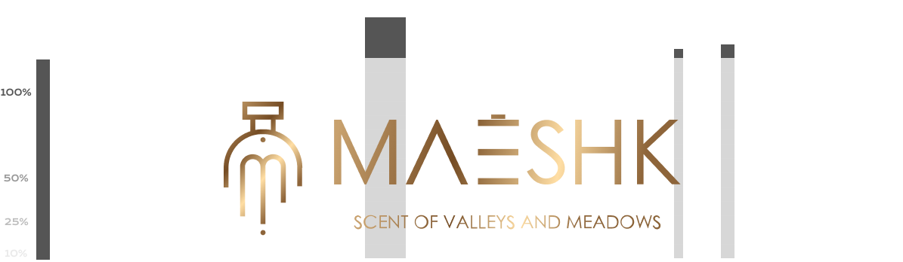
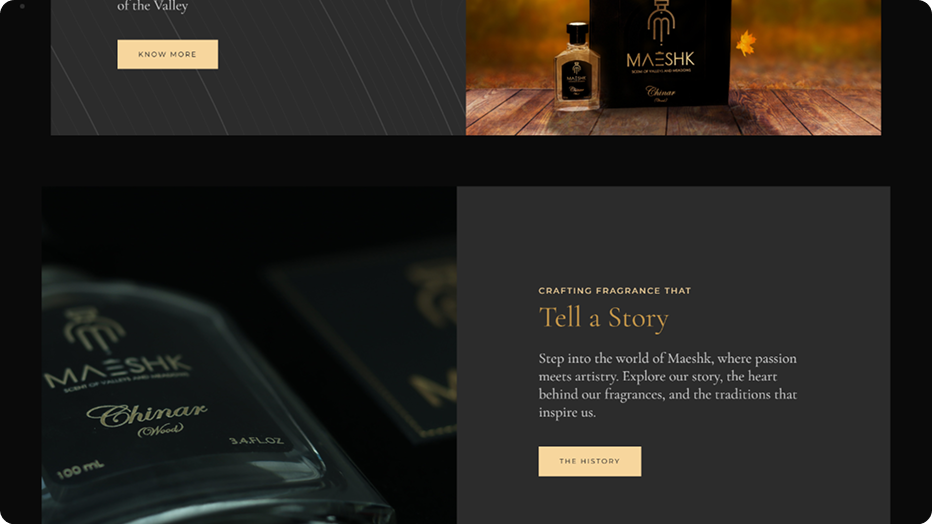

Crafting Tradition W ith Elegance
At Zynum Tech, we aimed to capture the true essence of Maeshk, a perfume brand rooted in
the rich heritage of Kashmir. Our goal was to create a logo that reflects both the
traditional beauty of the region and the modern luxury of the brand, as it prepares to enter
the UAE and USA markets.
The logo design features a classic perfume bottle, inspired by traditional Kashmiri
craftsmanship, symbolizing authenticity and elegance. At the heart of the design. we
integrated the letter “M,” representing Maeshk’s identity, seamlessly blending tradition with
contemporary aesthetics.
For the color palette, we chose a regal gold, reflecting luxury, opulence, and the premium
quality of Maeshk perfumes. The golden hues also signify the warmth and richness of the
Kashmiri valley, creating a direct connection between the brand and its cultural roots.
Through this thoughtful combination of traditional elements and modern appeal, we crafted
a logo that speaks to Maeshk’s unique heritage while setting the stage for its global
presence.



Kalnia
Aa
ABCDEFGHIJKLMNOPQRSTUVWXYZ
abcdefghijklmnopqrstuvwxyz
1234567890
‘?’?!(%)[#]@<&>-_-=+~!
Reflecting Elegance And Heritage
The colors chosen for Maeshk are all about blending tradition with luxury,
creating a look that’s both rooted in Kashmir and ready for the global
stage.
Gold (#C8A16E)
This rich gold stands for luxury and elegance, capturing the high-end
feel of Maeshk’s perfumes. It’s bold and classy, perfect for making a
statement in markets like the UAE and USA
Deep Charcoal (#0C0C0C)
A sleek, dark shade that balances the gold. It adds sophistication and
depth, making the overall design feel refined and modern.
Ivory White (#F5F5F5)
A soft, clean white that complements the richness of the other colors. It
adds a touch of purity and lightness to the brand’s identity.


At Zynum Tech, we aimed to capture the true essence of Maeshk, a perfume brand rooted in
the rich heritage of Kashmir. Our goal was to create a logo that reflects both the
traditional beauty of the region and the modern luxury of the brand, as it prepares to enter
the UAE and USA markets.
The logo design features a classic perfume bottle, inspired by traditional Kashmiri
craftsmanship, symbolizing authenticity and elegance. At the heart of the design. we
integrated the letter “M,” representing Maeshk’s identity, seamlessly blending tradition
with
contemporary aesthetics.
For the color palette, we chose a regal gold, reflecting luxury, opulence, and the premium
quality of Maeshk perfumes. The golden hues also signify the warmth and richness of the
Kashmiri valley, creating a direct connection between the brand and its cultural roots.
Through this thoughtful combination of traditional elements and modern appeal, we crafted
a logo that speaks to Maeshk’s unique heritage while setting the stage for its global
presence.